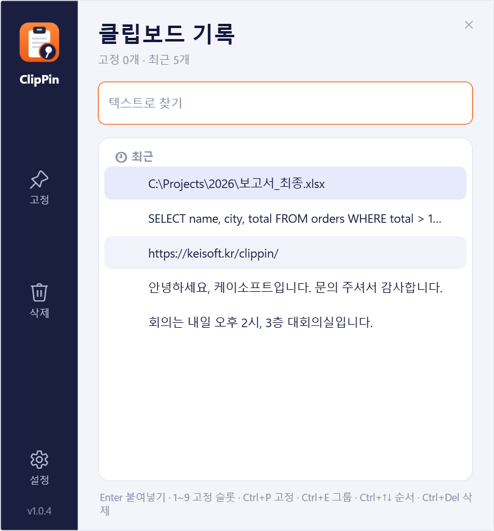
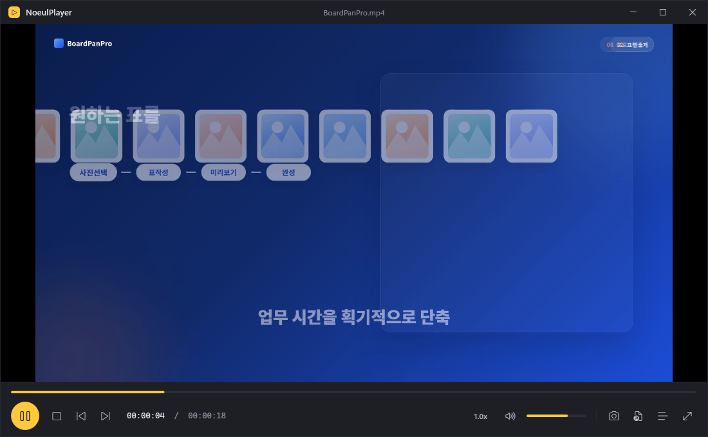
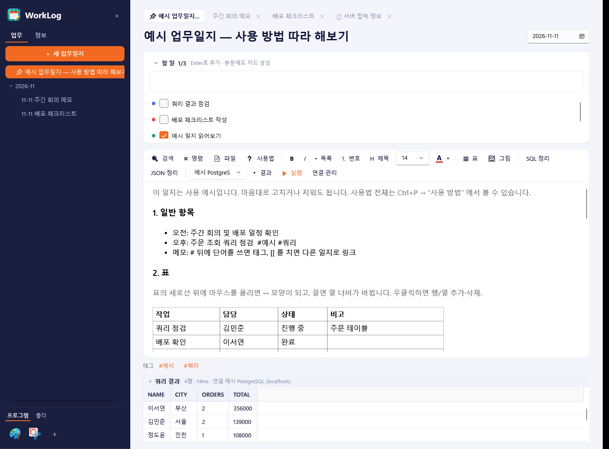
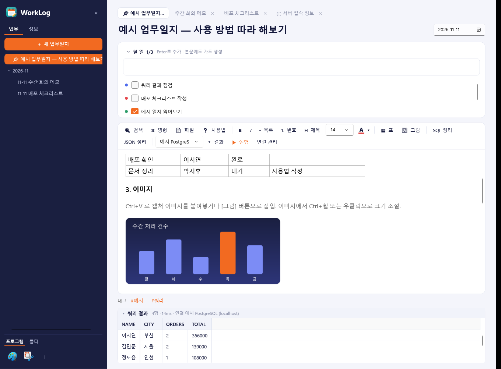
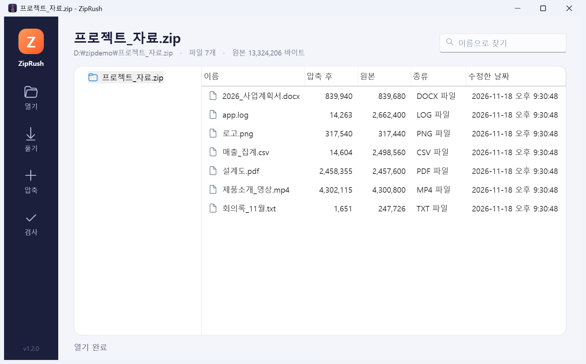

CLIPBOARD MANAGER
ClipPin
복사한 텍스트와 이미지를 모두 기록하고, 자주 쓰는 항목은 고정해 숫자 키 한 번으로 붙여넣는 Windows 클립보드 관리자.
-
텍스트·이미지 기록복사하는 즉시 저장하고, 같은 내용은 중복 없이 맨 위로 올라옵니다.
-
고정 항목 + 숫자 키Ctrl+P로 고정한 항목 1~9번을 숫자 하나로 바로 붙여넣습니다.
-
자동 붙여넣기항목을 고르면 쓰던 창으로 돌아가 Ctrl+V까지 알아서 보냅니다.
-
그룹 · 바로 검색고정 항목을 그룹으로 묶고, 팝업을 열자마자 입력해 걸러냅니다.
Windows x64
내 PC에만 저장
관리자 권한 불필요

VIDEO PLAYER
노을 플레이어
코덱을 따로 깔 필요 없이 바로 재생되는, 어두운 화면에 꼭 필요한 버튼만 남긴 가볍고 깔끔한 Windows 동영상 플레이어(NoeulPlayer).
-
대부분의 포맷 바로 재생MP4, MKV, AVI, WebM, HEVC 등을 추가 설치 없이 재생합니다.
-
탐색 바 미리보기탐색 바에 마우스를 올리면 그 위치의 장면이 바로 보입니다.
-
원본 해상도 캡처Ctrl+E 한 번이면 현재 장면이 PNG로 저장됩니다.
-
재생목록 · 배속 · 전체 화면0.2~4배속, 더블클릭 전체 화면, 키보드 조작을 지원합니다.
버전 1.1.0
Windows 10/11 64비트
무료


WORK JOURNAL
WorkLog
날짜별 업무일지에 표·그림·할 일·SQL 쿼리를 한곳에 기록하고, 결과까지 그 자리에서 확인하는 Windows 업무일지 프로그램.
-
날짜별 일지 + 정보 노트월별로 묶인 일지와 날짜 없는 메모(서버 주소, 자주 쓰는 쿼리)를 나눠 관리합니다.
-
열린 일지는 탭으로브라우저처럼 탭으로 열리고, 다음 실행 때도 그대로 돌아옵니다.
-
표 · 그림 · 할 일본문에 표와 이미지를 넣고, 상단 할 일 목록으로 하루를 정리합니다.
-
SQL 실행 결과 확인일지 안에서 쿼리를 실행하고 결과 표를 바로 확인합니다.
Windows 10/11 64비트
MSI 설치 파일
내 PC에만 저장

COMPRESSION
ZipRush
모든 CPU 코어를 한꺼번에 써서 빠르게 압축하고 푸는 Windows 압축 프로그램. 탐색기 우클릭만으로 끝납니다.
-
병렬 압축zip은 파일마다, tar.zst는 4MB 블록마다 여러 코어가 동시에 압축합니다.
-
탐색기 우클릭파일·폴더를 우클릭해 압축하고, 압축 파일도 우클릭으로 바로 풉니다.
-
내용 미리 보기 · 일부만 풀기풀지 않고 폴더 트리를 보고 검색하며, 원하는 파일만 골라 풉니다.
-
AES-256 암호 zip압축 설정에서 암호를 입력하면 암호화된 zip이 만들어집니다.
zip · tar.zst
멀티스레드
관리자 권한 불필요